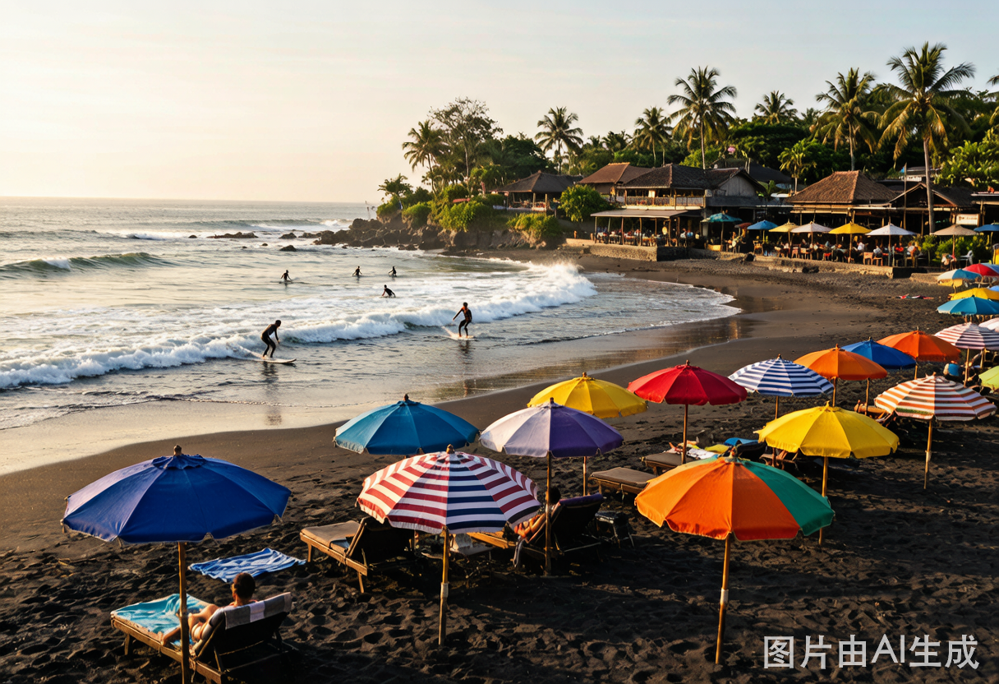
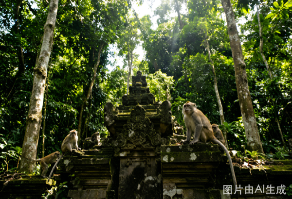
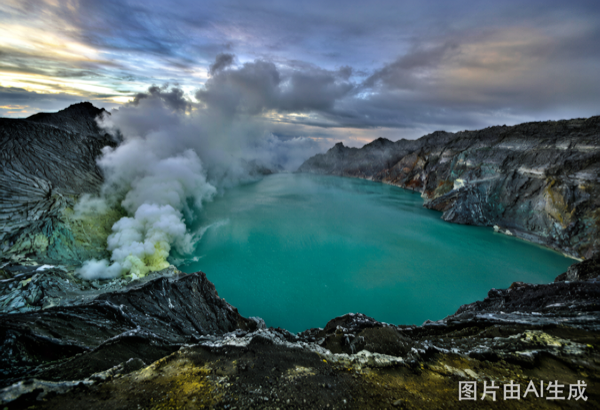
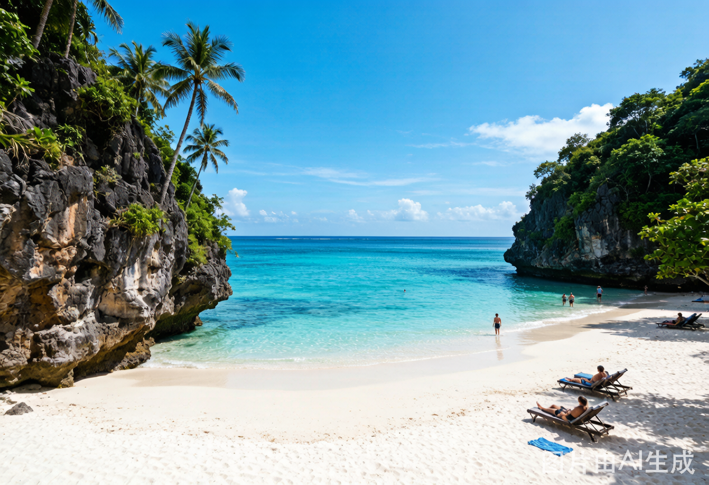

🇸🇬 新加坡转机 · 9/26 凌晨→傍晚
20.5 小时中转，足够进城吃玩。
樟宜 → MRT 滨海湾鱼尾狮 + 超级树（免费）→ 牛车水麦士威熟食中心海南鸡饭 → 甘榜格南哈芝巷 → 傍晚回星耀樟宜逛雨漩涡 → 21:15 飞巴厘岛。
中国护照新加坡过境免签 96h · MRT 全日 S$10/人 · 餐饮 ¥80-150/人
20.5 小时中转，足够进城吃玩。
樟宜 → MRT 滨海湾鱼尾狮 + 超级树（免费）→ 牛车水麦士威熟食中心海南鸡饭 → 甘榜格南哈芝巷 → 傍晚回星耀樟宜逛雨漩涡 → 21:15 飞巴厘岛。
中国护照新加坡过境免签 96h · MRT 全日 S$10/人 · 餐饮 ¥80-150/人

凌晨 00:05 抵 DPS，入住 Seminyak 酒店补觉。午后 Double Six Beach 日落啤酒，沙滩豆袋椅躺平，晚上海鲜烧烤 — 给身体一个缓冲。
上午 Uluwatu Temple 悬崖庙俯瞰印度洋。午后 Padang Padang 海滩穿岩洞入沙滩。日落时刻悬崖剧场 Kecak Fire Dance — 火与舞在暮色中燃烧。
上午冲浪体验课 2h（Batu Bolong 初学者友好）。午后田间咖啡馆：Crate Cafe 或 Penny Lane。傍晚 La Brisa 海滩俱乐部日落。



上午 Tegallalang 梯田 — 巴厘岛明信片画面，高空秋千荡进稻田海洋。下午 Tirta Empul 圣泉寺，千年圣水池可体验洗礼。傍晚 Ubud Art Market 淘手工蜡染。
上午 Sacred Monkey Forest — 古庙废墟 + 长尾猕猴在丛林光影中穿行。午后 Campuhan Ridge Walk 山脊漫步。16:00 包车出发，坐渡轮去巴纽旺宜。


凌晨 1:00 从酒店出发，2:00 到达 Paltuding 登山口。徒步 1.5-2h 到达火山口边缘。黑暗中硫磺燃烧的蓝色火焰在眼前跳动 — 地球上只有冰岛和这里能看到。
天光渐亮，世界最大酸性火山湖显露真容 — 碧绿色湖面在火山口内蒸腾。日出后下山，12:00 前回到酒店。午后坐渡轮回巴厘岛，晚上抵达休整。

Sanur 快船 45min 登岛。直奔 Kelingking 精灵坠崖 — T-Rex 形状悬崖直插碧海。午后 Angel's Billabong 天然无边泳池 + Broken Beach 断桥拱门。傍晚 Crystal Bay 浮潜，Manta Ray 出没季。
如体力够，日出前出发东线：Diamond Beach 钻石海滩 — 沿峭壁楼梯下到白沙滩。拍完照赶在午前回来，不耽误西线行程。量力而行。


上午 Penida 快船 20min 到 Lembongan。下午 Devil's Tear 恶魔的眼泪 — 巨浪冲入凹洞喷出水雾，阳光折射出彩虹。傍晚 Dream Beach 日落，Jungutbatu 海滩海鲜烧烤。
上午浮潜半日游：Manta Bay + Crystal Bay + 红树林，包船 2-3h。中午退房。14:00 快船回 Sanur，Grab 去 DPS 机场。17:00 前到机场，21:40 起飞。
上午浮潜 → 12:00 午餐退房 → 14:00 Lembongan 快船 → 14:30 抵 Sanur → 15:00 Grab 出发 → 15:30 到 DPS → 21:40 起飞。全程不赶。
Gojek + Grab 都装，南部/乌布覆盖好。佩妮达和蓝梦几乎叫不到车，租摩托或包车。
机场只换 ¥500 应急。Seminyak/Ubud 正规兑换点汇率最好。BCA ATM 银联可取。
运动鞋（伊真徒步）+ 薄外套（凌晨山顶 10°C）+ 珊瑚礁安全防晒 + 纱笼（进庙）。
Sanur→Penida & Penida→Lembongan→Sanur 快船，12Go.asia 或酒店前台提前一天订。